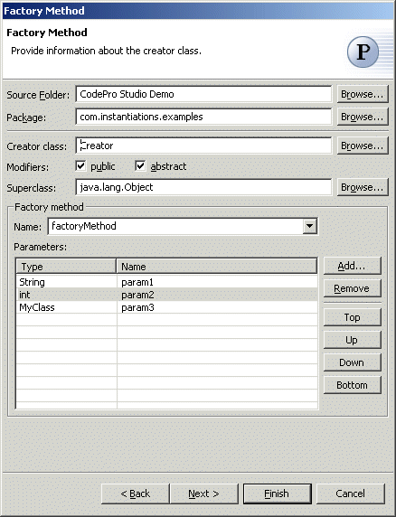
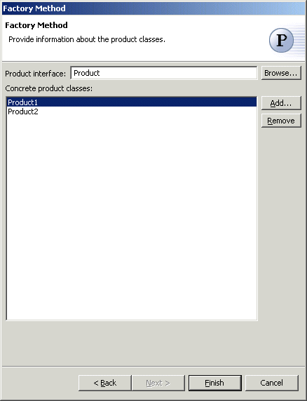

Factory Method Pattern
Also known as: Virtual Constructor
The  Factory Method Pattern defines an interface for creating an object, but let
subclasses decide which class to instantiate. Factory Method lets a class
defer instantiation to subclasses.
Factory Method Pattern defines an interface for creating an object, but let
subclasses decide which class to instantiate. Factory Method lets a class
defer instantiation to subclasses.
Wizard

| Option | Description | Default |
| Source folder | Enter a source folder for the new class. Either type a valid source folder path or click Browse to select a source folder via a dialog. | The source folder of the element that was selected when the wizard was started. |
| Package | Enter a package to contain the new class. Either type a valid package name or click Browse to select a package via a dialog. | The package of the element that was selected when the wizard has been started. |
| Creator class | Type or click Browse to select the creator class. | <Creator> |
| Modifiers | Select one or more access modifiers for the new class.
|
public |
| Superclass | Type or click Browse to select a superclass for this class. | <java.lang.Object> |
| Factory method | Type or select the name of the factory method | <factoryMethod> |
| Parameters | Specify the parameters for the factory method | <blank> |

| Option | Description | Default |
| Product interface | Type or click Browse to select the product interface | <Product> |
| Concrete product classes | Click Add to enter names of concrete product classes that should be created. | <blank> |
Applicability
Use the Factory Method pattern when
- a class can't anticipate the class of objects it must create.
- a class wants its subclasses to specify the objects it creates.
- classes delegate responsibility to one of several helper subclasses, and you want to localize the knowledge of which helper subclass is the delegate.
Additional Resources
http://c2.com/cgi/wiki?FactoryMethodPattern
http://www.wikipedia.org/wiki/FactoryMethod_pattern
http://www.cmcrossroads.com/bradapp/javapats.html#FactoryMethod